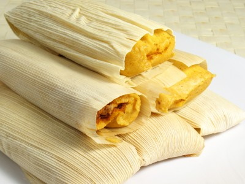

RECEITAS MEXICANAS
Simples, alegre e colorida, a comida mexicana é bem familiar para nós brasileiros. Muito além de tacos com queijo, há petiscos, pratos completos, bebidas e até sobremesas, tudo com a marca do sabor intenso, das mordidas deliciosas e do equilíbrio. Há picância, frescor, acidez, cremosidade e crocância. Escolha suas receitas de comida mexicana preferidas e entre para essa festa de sabores.
vamos cozinhar?
Tamales

Tamales
Dica:
Esta é uma receita mexicana muito tradicional, que usa banha. Não tenha muito medo da banha. Pessoas de todo o mundo usam banha pura há anos na culinária. Muitos argumentarão que isso traz enormes benefícios à saúde. Os outros ingredientes são bastante saudáveis para você.